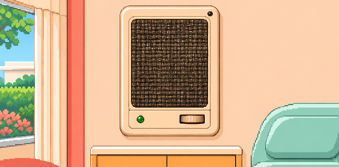
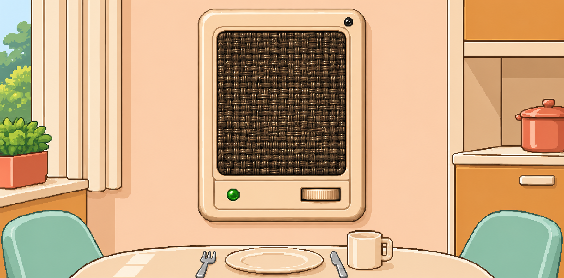
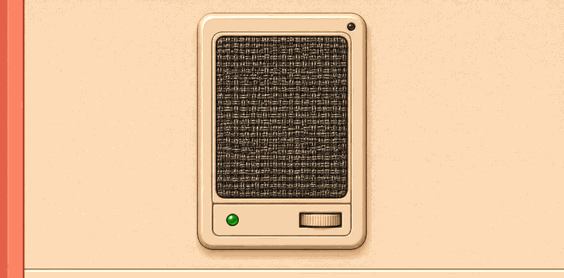
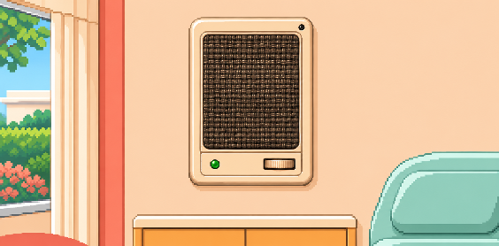
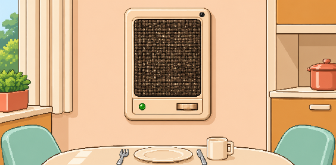

Current review candidate · unselected

SHA-256 a3d55c565d98fa92a8829100e3f0d255b72ff2963b30dd505be687df3a358bbbcandidates/A-lounge-conversation-v02.png
UNSELECTED · PENDING ART DIRECTOR REVIEW
Two complete environmental portrait candidates. Native 564×278 RGB; exact nearest-neighbor 4× previews. The production artwork paths remain empty.
portraits:house:idle#views:house_of_tomorrow/lounge · used by comfort_offer

SHA-256 a3d55c565d98fa92a8829100e3f0d255b72ff2963b30dd505be687df3a358bbbcandidates/A-lounge-conversation-v02.png

Garden daylight, peach wall, coral trim, warm cabinet, and cropped empty mint recliner. The speaker remains flush against the wall.
Use case: precise-object-edit Asset type: The Acceptable Error Chapter 1 House lounge conversation portrait, opaque environmental pixel art. Input images: Image 1 is the lounge candidate to correct. Image 2 is the APPROVED foyer conversation portrait and Image 3 the APPROVED gallery portrait, both authoritative intercom identity and scale references. Make ONE correction to Image 1: enlarge the existing intercom in place to match the approved portraits' screen scale. On the 564x278 logical canvas, its housing should be approximately 170 pixels wide and 230 pixels tall (approximately x=198..368, y=7..237), rather than the smaller housing in Image 1. Keep the same tall panel shape and proportions, cream housing, brown woven grille, tiny upper-right black camera dot, lower-left round green lamp and lower-right short ribbed thumbwheel, shallow pixel shadow. The camera dot is INSIDE the housing's upper-right margin, exactly like Image 2. Do not add any support under the intercom. Preserve all the lounge background composition and furniture from Image 1, including its cropped edge cues, warm peach wall and daylight. Leave room cues at the frame edges; they may be cropped naturally by the larger intercom. Do not add objects or text. Keep all chairs empty, all plates empty, no people, hands or protagonist. Do not import the gallery camera or printer from the identity references. Pixel fidelity: draw the final result as crisp native 564x278 pixel art, with deliberate pixel steps and flat clusters matching the approved references. Avoid soft blended gradients, antialiasing, grain overlay, blurry texture or smooth vector contours. Keep the woven grille density consistent with the approved reference. Landscape ratio 564:278; if rendering larger, use exactly 2256x1112 with a 4x4 integer block grid. Complete opaque RGB image, no separate sprite or layer. The original registered brief remains authoritative: EXACT 564x278 native pixel art, ONE complete opaque RGB image (format opaque-complete, docs/92 section 1): no transparent foreground layer, no separate character sprite, no widened or scaled crop of the 314x206 scene. Subject: the SAME House of Tomorrow wall intercom as the integrated foyer and portrait-gallery conversation views (art/portraits/house/foyer_conversation.png, portrait_gallery_conversation.png): a flush wall-mounted 1960s ivory/cream rounded-rectangle panel, dark brown woven speaker grille, small black camera lens dot at the upper right, lower strip with a green indicator lamp at left and a ribbed horizontal thumbwheel at right, soft drop shadow on the wall. Mounted directly on the wall: NO post, stand or pedestal beneath it. Match those views' scale, placement, warm peach/cream wall palette, outlines and clean flat pixel clusters; restrained mid-century industrial retro-futurism; no brass, steampunk, gears, heavy dithering or blur. Camera: a tighter point-of-view into the corresponding main scene (art/scenes/house_of_tomorrow/lounge.png), with recognizable room cues at the frame edges only. No people, no hands, no protagonist, no text or UI baked in. LOUNGE cues from lounge.png: a sliver of the mint/teal Rest Assured recliner's padded headrest or armrest at one lower edge, a hint of the coral rug or warm wood cabinet, daylight tone from the garden window. The intercom remains the clear subject; the chair must not look occupied or threatening here.
portraits:house:idle#views:house_of_tomorrow/dining · used by dinner_arrival

SHA-256 33d7ed46c679bfbf9708edf84608cdf256a1eb22a213b55dd57825b9b6ec1f7acandidates/B-dining-conversation-v02.png

Empty white plate, cup and tabletop rim, two vacant mint chair backs, warm serving cabinet and garden edge. The full four-place table is established by the main scene; this close view shows one setting.
Use case: precise-object-edit Asset type: The Acceptable Error Chapter 1 House dining conversation portrait, opaque environmental pixel art. Input images: Image 1 is the dining candidate to correct. Image 2 is the APPROVED foyer conversation portrait and Image 3 the APPROVED gallery portrait, both authoritative intercom identity and scale references. Make ONE correction to Image 1: enlarge the existing intercom in place to match the approved portraits' screen scale. On the 564x278 logical canvas, its housing should be approximately 170 pixels wide and 230 pixels tall (approximately x=198..368, y=7..237), rather than the smaller housing in Image 1. Keep the same tall panel shape and proportions, cream housing, brown woven grille, tiny upper-right black camera dot, lower-left round green lamp and lower-right short ribbed thumbwheel, shallow pixel shadow. The camera dot is INSIDE the housing's upper-right margin, exactly like Image 2. Do not add any support under the intercom. Preserve all the dining background composition and furniture from Image 1, including its cropped edge cues, warm peach wall and daylight. Leave room cues at the frame edges; they may be cropped naturally by the larger intercom. Do not add objects or text. Keep all chairs empty, all plates empty, no people, hands or protagonist. Do not import the gallery camera or printer from the identity references. Pixel fidelity: draw the final result as crisp native 564x278 pixel art, with deliberate pixel steps and flat clusters matching the approved references. Avoid soft blended gradients, antialiasing, grain overlay, blurry texture or smooth vector contours. Keep the woven grille density consistent with the approved reference. Landscape ratio 564:278; if rendering larger, use exactly 2256x1112 with a 4x4 integer block grid. Complete opaque RGB image, no separate sprite or layer. The original registered brief remains authoritative: EXACT 564x278 native pixel art, ONE complete opaque RGB image (format opaque-complete, docs/92 section 1): no transparent foreground layer, no separate character sprite, no widened or scaled crop of the 314x206 scene. Subject: the SAME House of Tomorrow wall intercom as the integrated foyer and portrait-gallery conversation views (art/portraits/house/foyer_conversation.png, portrait_gallery_conversation.png): a flush wall-mounted 1960s ivory/cream rounded-rectangle panel, dark brown woven speaker grille, small black camera lens dot at the upper right, lower strip with a green indicator lamp at left and a ribbed horizontal thumbwheel at right, soft drop shadow on the wall. Mounted directly on the wall: NO post, stand or pedestal beneath it. Match those views' scale, placement, warm peach/cream wall palette, outlines and clean flat pixel clusters; restrained mid-century industrial retro-futurism; no brass, steampunk, gears, heavy dithering or blur. Camera: a tighter point-of-view into the corresponding main scene (art/scenes/house_of_tomorrow/dining.png), with recognizable room cues at the frame edges only. No people, no hands, no protagonist, no text or UI baked in. DINING cues from dining.png: near the lower edge, the rim of the four-place table with a laid place setting and the tops of empty mint/teal chair backs (all EMPTY; the table and empty chairs are story evidence), warm wood cabinets or the potted plant at a side edge. Nothing on the plates.
These copied references remain approved and unchanged. All four portraits share the same logical canvas dimensions; the scale controls apply equally.


The housing silhouette and control layout are consistent. Grille weave, pixel shading and bevel highlights are newly rendered; inspect their consistency with the approved sources before selecting.
Two independent first renders, then one focused enlargement per room. Earlier scale studies remain immutable provenance; none of these files has been selected.

Original 1784×882; native 564×278 RGB. Full-frame NEAREST sampling; no crop or smoothing.
Use case: compositing Asset type: The Acceptable Error, Chapter 1, complete opaque House environmental conversation portrait. This is a NEW candidate using approved references; do not modify the source files. Input images: Image 1 is the approved foyer conversation view (authoritative intercom identity, proportions, palette, outline and pixel density). Image 2 is the approved gallery conversation view (the SAME authoritative intercom viewed in another room). Image 3 is the approved lounge main scene (authoritative architecture, perspective, lighting, furniture, room palette). Primary request: Create the new lounge conversation viewpoint specified verbatim below. Keep the actual intercom design from Images 1 and 2: exactly one tall ivory rounded rectangular housing, dark brown woven rectangular grille above a cream lower control strip, green circular lamp on the lower left, short ribbed amber/ivory horizontal thumbwheel on the lower right, tiny black circular camera at the upper right. Preserve its physical proportions; the panel is approximately 170 pixels wide by 230 pixels high on the 564x278 logical canvas, with the grille approximately 132 by 160 logical pixels. It is flush-mounted directly to the peach wall with only a small shallow pixel shadow. No vertical supporting structure. The House intercom is the sole subject. Composition: A tighter, newly drawn view into Image 3, at the same upright eye-level room perspective, not a crop, stretched scene or panoramic view. Match the scale and clean square pixel contours of Images 1 and 2. Keep room cues subtle, restricted to the edges. Do not import the gallery camera, printer, red album or foyer doorway from the identity reference images. Output: Landscape ratio 564:278. Compose on an EXACT 564x278 logical pixel grid. If the tool renders at higher resolution, return a 2256x1112 image consisting of exact 4x4 square blocks per logical pixel. Flat controlled pixel clusters, sharp stepped curves, no antialiasing, blur or soft filtering, no grain/noise overlay. Do not replace pixel art with a smooth painted or photorealistic rendering. Opaque complete image, no alpha layer, no caption, labels, typography, border, watermark or UI. Registered brief (authoritative, verbatim): EXACT 564x278 native pixel art, ONE complete opaque RGB image (format opaque-complete, docs/92 section 1): no transparent foreground layer, no separate character sprite, no widened or scaled crop of the 314x206 scene. Subject: the SAME House of Tomorrow wall intercom as the integrated foyer and portrait-gallery conversation views (art/portraits/house/foyer_conversation.png, portrait_gallery_conversation.png): a flush wall-mounted 1960s ivory/cream rounded-rectangle panel, dark brown woven speaker grille, small black camera lens dot at the upper right, lower strip with a green indicator lamp at left and a ribbed horizontal thumbwheel at right, soft drop shadow on the wall. Mounted directly on the wall: NO post, stand or pedestal beneath it. Match those views' scale, placement, warm peach/cream wall palette, outlines and clean flat pixel clusters; restrained mid-century industrial retro-futurism; no brass, steampunk, gears, heavy dithering or blur. Camera: a tighter point-of-view into the corresponding main scene (art/scenes/house_of_tomorrow/lounge.png), with recognizable room cues at the frame edges only. No people, no hands, no protagonist, no text or UI baked in. LOUNGE cues from lounge.png: a sliver of the mint/teal Rest Assured recliner's padded headrest or armrest at one lower edge, a hint of the coral rug or warm wood cabinet, daylight tone from the garden window. The intercom remains the clear subject; the chair must not look occupied or threatening here. Room-specific reference reading: the intercom is on the warm wall between the garden window and the sliding doorway, as in Image 3. Keep the daylight and peach wall, with just a cropped mint recliner headrest or armrest at a lower frame edge and a small hint of the existing warm wood cabinet/coral rug. The chair remains empty, relaxed and unrestrained. No new furniture or ornaments.

Original 1786×881; native 564×278 RGB. Full-frame NEAREST sampling; no crop or smoothing.
Use case: compositing Asset type: The Acceptable Error, Chapter 1, complete opaque House environmental conversation portrait. This is a NEW candidate using approved references; do not modify the source files. Input images: Image 1 is the approved foyer conversation view (authoritative intercom identity, proportions, palette, outline and pixel density). Image 2 is the approved gallery conversation view (the SAME authoritative intercom viewed in another room). Image 3 is the approved dining main scene (authoritative architecture, perspective, lighting, furniture, room palette). Primary request: Create the new dining conversation viewpoint specified verbatim below. Keep the actual intercom design from Images 1 and 2: exactly one tall ivory rounded rectangular housing, dark brown woven rectangular grille above a cream lower control strip, green circular lamp on the lower left, short ribbed amber/ivory horizontal thumbwheel on the lower right, tiny black circular camera at the upper right. Preserve its physical proportions; the panel is approximately 170 pixels wide by 230 pixels high on the 564x278 logical canvas, with the grille approximately 132 by 160 logical pixels. It is flush-mounted directly to the peach wall with only a small shallow pixel shadow. No vertical supporting structure. The House intercom is the sole subject. Composition: A tighter, newly drawn view into Image 3, at the same upright eye-level room perspective, not a crop, stretched scene or panoramic view. Match the scale and clean square pixel contours of Images 1 and 2. Keep room cues subtle, restricted to the edges. Do not import the gallery camera, printer, red album or foyer doorway from the identity reference images. Output: Landscape ratio 564:278. Compose on an EXACT 564x278 logical pixel grid. If the tool renders at higher resolution, return a 2256x1112 image consisting of exact 4x4 square blocks per logical pixel. Flat controlled pixel clusters, sharp stepped curves, no antialiasing, blur or soft filtering, no grain/noise overlay. Do not replace pixel art with a smooth painted or photorealistic rendering. Opaque complete image, no alpha layer, no caption, labels, typography, border, watermark or UI. Registered brief (authoritative, verbatim): EXACT 564x278 native pixel art, ONE complete opaque RGB image (format opaque-complete, docs/92 section 1): no transparent foreground layer, no separate character sprite, no widened or scaled crop of the 314x206 scene. Subject: the SAME House of Tomorrow wall intercom as the integrated foyer and portrait-gallery conversation views (art/portraits/house/foyer_conversation.png, portrait_gallery_conversation.png): a flush wall-mounted 1960s ivory/cream rounded-rectangle panel, dark brown woven speaker grille, small black camera lens dot at the upper right, lower strip with a green indicator lamp at left and a ribbed horizontal thumbwheel at right, soft drop shadow on the wall. Mounted directly on the wall: NO post, stand or pedestal beneath it. Match those views' scale, placement, warm peach/cream wall palette, outlines and clean flat pixel clusters; restrained mid-century industrial retro-futurism; no brass, steampunk, gears, heavy dithering or blur. Camera: a tighter point-of-view into the corresponding main scene (art/scenes/house_of_tomorrow/dining.png), with recognizable room cues at the frame edges only. No people, no hands, no protagonist, no text or UI baked in. DINING cues from dining.png: near the lower edge, the rim of the four-place table with a laid place setting and the tops of empty mint/teal chair backs (all EMPTY; the table and empty chairs are story evidence), warm wood cabinets or the potted plant at a side edge. Nothing on the plates. Room-specific reference reading: the intercom belongs to the peach wall by the warm wooden serving cabinetry in Image 3. Show the four-place tabletop rim and a laid empty white plate near the lower frame edge, plus cropped tops of the existing EMPTY mint chair backs. The table is empty of food and all chairs are vacant. A hint of the existing cabinet at a side edge is sufficient. Do not expand to a view of the whole dining room.
Original 1788×880; native 564×278 RGB. Full-frame NEAREST sampling; no crop or smoothing.
Use case: precise-object-edit Asset type: The Acceptable Error Chapter 1 House lounge conversation portrait, opaque environmental pixel art. Input images: Image 1 is the lounge candidate to correct. Image 2 is the APPROVED foyer conversation portrait and Image 3 the APPROVED gallery portrait, both authoritative intercom identity and scale references. Make ONE correction to Image 1: enlarge the existing intercom in place to match the approved portraits' screen scale. On the 564x278 logical canvas, its housing should be approximately 170 pixels wide and 230 pixels tall (approximately x=198..368, y=7..237), rather than the smaller housing in Image 1. Keep the same tall panel shape and proportions, cream housing, brown woven grille, tiny upper-right black camera dot, lower-left round green lamp and lower-right short ribbed thumbwheel, shallow pixel shadow. The camera dot is INSIDE the housing's upper-right margin, exactly like Image 2. Do not add any support under the intercom. Preserve all the lounge background composition and furniture from Image 1, including its cropped edge cues, warm peach wall and daylight. Leave room cues at the frame edges; they may be cropped naturally by the larger intercom. Do not add objects or text. Keep all chairs empty, all plates empty, no people, hands or protagonist. Do not import the gallery camera or printer from the identity references. Pixel fidelity: draw the final result as crisp native 564x278 pixel art, with deliberate pixel steps and flat clusters matching the approved references. Avoid soft blended gradients, antialiasing, grain overlay, blurry texture or smooth vector contours. Keep the woven grille density consistent with the approved reference. Landscape ratio 564:278; if rendering larger, use exactly 2256x1112 with a 4x4 integer block grid. Complete opaque RGB image, no separate sprite or layer. The original registered brief remains authoritative: EXACT 564x278 native pixel art, ONE complete opaque RGB image (format opaque-complete, docs/92 section 1): no transparent foreground layer, no separate character sprite, no widened or scaled crop of the 314x206 scene. Subject: the SAME House of Tomorrow wall intercom as the integrated foyer and portrait-gallery conversation views (art/portraits/house/foyer_conversation.png, portrait_gallery_conversation.png): a flush wall-mounted 1960s ivory/cream rounded-rectangle panel, dark brown woven speaker grille, small black camera lens dot at the upper right, lower strip with a green indicator lamp at left and a ribbed horizontal thumbwheel at right, soft drop shadow on the wall. Mounted directly on the wall: NO post, stand or pedestal beneath it. Match those views' scale, placement, warm peach/cream wall palette, outlines and clean flat pixel clusters; restrained mid-century industrial retro-futurism; no brass, steampunk, gears, heavy dithering or blur. Camera: a tighter point-of-view into the corresponding main scene (art/scenes/house_of_tomorrow/lounge.png), with recognizable room cues at the frame edges only. No people, no hands, no protagonist, no text or UI baked in. LOUNGE cues from lounge.png: a sliver of the mint/teal Rest Assured recliner's padded headrest or armrest at one lower edge, a hint of the coral rug or warm wood cabinet, daylight tone from the garden window. The intercom remains the clear subject; the chair must not look occupied or threatening here.
Original 1785×881; native 564×278 RGB. Full-frame NEAREST sampling; no crop or smoothing.
Use case: precise-object-edit Asset type: The Acceptable Error Chapter 1 House dining conversation portrait, opaque environmental pixel art. Input images: Image 1 is the dining candidate to correct. Image 2 is the APPROVED foyer conversation portrait and Image 3 the APPROVED gallery portrait, both authoritative intercom identity and scale references. Make ONE correction to Image 1: enlarge the existing intercom in place to match the approved portraits' screen scale. On the 564x278 logical canvas, its housing should be approximately 170 pixels wide and 230 pixels tall (approximately x=198..368, y=7..237), rather than the smaller housing in Image 1. Keep the same tall panel shape and proportions, cream housing, brown woven grille, tiny upper-right black camera dot, lower-left round green lamp and lower-right short ribbed thumbwheel, shallow pixel shadow. The camera dot is INSIDE the housing's upper-right margin, exactly like Image 2. Do not add any support under the intercom. Preserve all the dining background composition and furniture from Image 1, including its cropped edge cues, warm peach wall and daylight. Leave room cues at the frame edges; they may be cropped naturally by the larger intercom. Do not add objects or text. Keep all chairs empty, all plates empty, no people, hands or protagonist. Do not import the gallery camera or printer from the identity references. Pixel fidelity: draw the final result as crisp native 564x278 pixel art, with deliberate pixel steps and flat clusters matching the approved references. Avoid soft blended gradients, antialiasing, grain overlay, blurry texture or smooth vector contours. Keep the woven grille density consistent with the approved reference. Landscape ratio 564:278; if rendering larger, use exactly 2256x1112 with a 4x4 integer block grid. Complete opaque RGB image, no separate sprite or layer. The original registered brief remains authoritative: EXACT 564x278 native pixel art, ONE complete opaque RGB image (format opaque-complete, docs/92 section 1): no transparent foreground layer, no separate character sprite, no widened or scaled crop of the 314x206 scene. Subject: the SAME House of Tomorrow wall intercom as the integrated foyer and portrait-gallery conversation views (art/portraits/house/foyer_conversation.png, portrait_gallery_conversation.png): a flush wall-mounted 1960s ivory/cream rounded-rectangle panel, dark brown woven speaker grille, small black camera lens dot at the upper right, lower strip with a green indicator lamp at left and a ribbed horizontal thumbwheel at right, soft drop shadow on the wall. Mounted directly on the wall: NO post, stand or pedestal beneath it. Match those views' scale, placement, warm peach/cream wall palette, outlines and clean flat pixel clusters; restrained mid-century industrial retro-futurism; no brass, steampunk, gears, heavy dithering or blur. Camera: a tighter point-of-view into the corresponding main scene (art/scenes/house_of_tomorrow/dining.png), with recognizable room cues at the frame edges only. No people, no hands, no protagonist, no text or UI baked in. DINING cues from dining.png: near the lower edge, the rim of the four-place table with a laid place setting and the tops of empty mint/teal chair backs (all EMPTY; the table and empty chairs are story evidence), warm wood cabinets or the potted plant at a side edge. Nothing on the plates.
The generator did not return an exact integer logical grid. Native exports use nearest-neighbor sampling; original renders are preserved. Exact 4× pixel expansion is verified. This does not establish artistic approval or prove the originals used a uniform logical pixel density.
Generation source b3e374b9a12c1bd2e60ec437293a734ffe562d33; branch base 1ce7e79641e764d11367d476c7ede9ee0e8614c2, preserving concurrent final Chapter 2 Batch 8 approvals. Chapter 1 briefs and references are unchanged. No changes to story, gameplay, Chapter 3, approved artwork, production paths, selected-art previews or workflows. Batch B conversions remain on their existing branch at 004758e.
STOP FOR ART DIRECTOR APPROVAL. Selection, registration and integration are subsequent work.